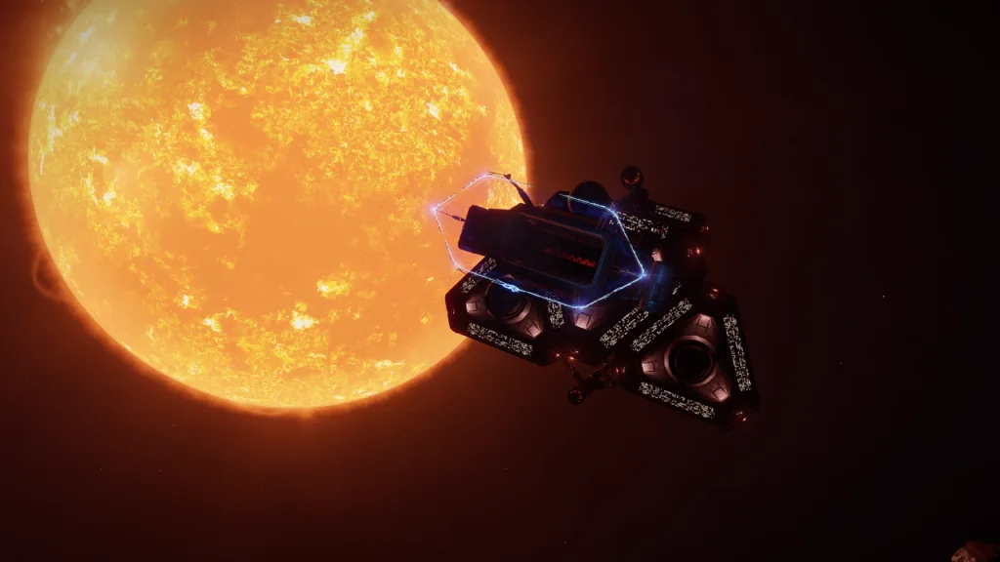

The Hesperus is a Lowell class megaship that can be found in the Perseus Dark Region KC-V c2-2 system, orbiting body B (A Belt – Cluster 1).
The Hesperus was owned by Azimuth Biochemicals, and it is the sister ship of the Adamastor. A dredger from the Scriveners Clan which was claiming to own to salvage rights on the Hesperus left on 09 July 3307.
There are low level materials and cargo scattered around. There is one uplink on the Hesperus and a Tourist Beacon that gives information that was previously available in an encoded form on the dredger.
The survivors from the Azimuth Biochemicals crew were later found at the Proteus landing site. If you plan to head over there after the Hesperus you may find you cannot plot a direct route due to permit locked regions – navigating via the Oochorrs HZ-V b48-0 system, and the on to the Proteus should allow access.
The Hesperus was previously not visible in the FSS, you needed to drop into the actual asteroid cluster, however this is now not the case.
Contents:
On April 8 3307 it was announced on Galnet that a Listening Post had been found on board the Adamastor with a cryptic message, referencing the Hesperus. As you drop into the Adamastor a message was received from someone signed as ‘Salvation’ indicating that the Listening Post contains further search details:
ACCESS CODES
Pilot, this message is being sent due to your proximity to Adamastor. I need your help to find out more about the signal it has received.
For now I cannot provide you with my credentials. Suffice to say that I am a man of science, unconnected with modern politics. I am recruiting agents to investigate the work undertaken by Azimuth Biochemicals two hundred years ago, which I believe to be of enormous scientific importance. Much has been lost in that time, but our dedication will allow us to rewrite history.
The immediate goal is to locate the source of the signal. You can download this by scanning the listening post that is contained onboard the Adamastor. I am unable to travel to the Chukchan system, so you must obtain this yourself.
I have transmitted a unique access key to your ship’s computer, to allow you to read the signal’s contents. I believe it contains location data that has been rerouted through communication beacons. Unfortunately all details of these beacons have been lost, so your task is to find and decrypt them.
I shall be monitoring your progress remotely. Good luck.
Salvation
Scanning the Listening Post (only visible in the navigation panel once you drop at the Adamastor at Chukchan 5 b) gives further details:
PRIVATE BEACON
Access Code AZB3648-000
Secure channel link established.
Drive input mode: Locked
Source ID: H002255 [Hesperus]Timestamp: 08/04/3307 03:44
Proximity alert: Type G [unidentified megaship]
Emergency upload protocol 01G engaged.
Status log: Inactive
Mission log: Inactive
Crew manifest: Inactive
Locator beacon: Active
Pulse transmission status: Running
Navigational data to follow…
H1 Key -E
H2 Key +H
H3 Key -C
Beacon region: Taurus
Security notice: All information contained herein remains the intellectual property of Azimuth Biochemicals. Any violations of confidentiality will be prosecuted in accordance with the 2984 Corporate Communications Act.
Note: The Listening Post was subsequently removed, and this version of the message is no longer available. However, a decrypted version is available from the local news.
With the above clue to search in the Taurus region a listening post was found in Taurus Dark Region UY-R b4-0:
PRIVATE BEACON
Transmitting encrypted data package
Weak matched signals detected:
Latin alphabet
H2 FBJILYIFUILOMPDYAFRGMKIULIN 1333
H3 ADFFGDKIOOPLFNIHLRFEUOPQJWLSEDM
Source ID: H002255 [Hesperus]
Signal range: REDACTED
A3:-L_,C3:+AF_,G2:*-A
…Transmission Ends..
Noting that the two lines H2 and H3 map to the lines in the original message also prefixed with H2 and H3 it was deduced that the information in the original message might help decode the new messages. -E / +H / -C were transformed (using A=1, B=2 etc) into -5 / +8 / -3 and used to determine that they are offsets in a ROT (rotation) cypher. So H2 (“+H”) becomes a ROT8 transform. When we do this to H2 we get “NJRQTGQNCQTWUXLGINZOUSQCTQV 1333”. If this is reformatted to also use ‘8’ as the width we get:
NJRQTGQN
CQTWUXLG
INZOUSQC
TQV 1333
Reading down the right we get NGC 1333 as a clue. Applying the same logic to H3 we transform -C to -3. A rotation of -3 is the same as 23 – so ROT23 the text and lay out with a width of 3 and the result is California.
Searches of the area around NGC 1333 and the California Sector detected two more Listening Posts, one in the Perseus Dark Region LN-K b8-0 system (the NGC 1333 nebula is within the Perseus constellation), and the other in the California Sector IH-V c2-1 system. The California Listening Post was not found for some time – it is believed it was within an asteroid belt and not visible to the FSS (as is also the case with the Hesperus). All the Listening Posts are inside asteroid belts, which was presumably intended as a clue.
The California and Perseus Listening Posts repeat the existing H2/H3 data, and also give the H1 location – which can be decoded the same way to give the location TAURUS – which was the initial Listening Post.
PRIVATE BEACON
Transmitting encrypted data package
Weak matched signals detected:
Latin alphabet
H1 ACGTYMNGYFUIPLZGHUIWBLUIZOPKMXGTR
H3 ADFFGDKIOOPLFNIHLRFEUOPQJWLSEDM
Source ID: H002255 [Hesperus]
Signal range: REDACTED
A2:/B,C1:BL_,G1:+DF_
…Transmission Ends..
PRIVATE BEACON
Transmitting encrypted data package
Weak matched signals detected:
Latin alphabet
H1 ACGTYMNGYFUIPLZGHUIWBLUIZOPKMXGTR
H2 FBJILYIFUILOMPDYAFRGMKIULIN 1333
Source ID: H002255 [Hesperus]Signal range: REDACTED
A1:-AX_,C2:*-A,G3:+E_
…Transmission Ends..
After all three were found we were left with three sets of data from the Listening Posts to decode.
We have these codes from the three listening posts:
These were re-ordered to combine all the “A” sections in order, all the “C” sections in order, and all the “G” sections in order to give:
And using Base26 encoding, along with replacing underscores with ‘0’ we get:
And when we do the math we end up with:
Looking at this location in the galmap gives the location of the Hesperus – Perseus Dark Region KC-V c2-2 – as the closest result.

The logs all use transposition encryption where the text is split into regular sized chunks and the characters are then swapped within each chunk, though the chosen chunk sizes differ. Some logs also reverse the data, and some specify characters that should be rendered as whitespace. A decoder based on the Python program written by Disgo is built into this page: see the live decoder below, where you can also view its source code in Python and JavaScript.
Decoded versions of the logs are now available from a beacon called “Hesperus Logs”, which was added after the logs were decoded.
LOG 1:
Timestamp: 12/07/3113 21:05
Emergency Log. This is Lieutenant Kelemen, deputy… acting security chief on the Hesperus. l have to report that the ship has been overtaken by enemy soldiers. Most of the crew are either dead or in hiding, like us.
It’s Pharmasapien. Has to be. They had sleeper agents onboard, including some of my own troops. How the hell did they avoid our checks? They must have been waiting all this time, but today they just… opened fire. Cut down most of security first, including Major Umaru, then the bridge crew. The rest were marched into the cargo holds at gunpoint. In an hour, they controlled the Hesperus.
Private Velasco and l managed to gather about half of the science team, and we made it to the aft engineering levels without being spotted. I’ve disabled the sensor suite so they’ll have to search for us in person, which should buy us a few hours.
I’ve fought Pharmasapien mercenaries before. Infiltration is their speciality, but this is the biggest operation they’ve ever pulled. Unless… maybe the same thing happened to the Adamastor? Makes sense. if they attacked either them or us using ships, proximity sensors would have automatically sent a distress signal to Azimuth.
Pharmasapien must know about our probes then, and that they found signs of nonhuman artefacts. And that means they’ll kill anyone to get to them first.
The scientists are asking me what’s our next step. That’s easy – we survive. But l don’t have a clue how. How can l save these people?
LOG 2:
Timestamp: 13/07/3113 02:32
Lieutenant Kelemen, emergency log, final entry. We’ve managed to move around undetected for several hours now, although it feels like the ship is deserted. The cargo holds had hundreds of people imprisoned there, we could hear their shouts ringing through the corridors, but suddenly they all went quiet. Did Pharmasapien… my God, those psychopaths!
We have a plan to jump ship. Velasco has volunteered to use explosive charges to create a distraction, while l lead everyone to the launch bays. I’ve ordered her to rejoin us and not be a hero. l can’t afford to lose her.
They haven’t managed to block my command codes yet, so I’ll be able to get full control of all the secondary exploration craft. A few of the scientists have piloting experience, fortunately. Some of them even want to continue the mission, saying there are systems within range that may contain alien artefacts. Let’s see if we get out alive first.
I’m going to encrypt these logs in the central computer, so Pharmasapien won’t detect them. But Azimuth will, and at least they’ll know what happened… assuming they ever manage to retake the Hesperus.
LOG 3:
Timestamp: 22/07/3113 09:40
Recording.. This is Junior Engineer O’Neill. I’ve just come back into the ship and found everyone poisoned.. Gassed. They’re lying on the floor with their eyes and mouths all.. oh my god.. something’s killed them all!
I was out on the hull. We’ve been searching for non-human signals using Azimuth’s data to try and locate what they were looking for. The chief started wondering if the sensor arrays were damaged, so I went out to check. Lost all Comms. Came back through the airlock and found…
Can’t risk taking my suit off – this poison gas it’s probably still in the air. I might be the only one left alive unless anyone else is suited. have to go looking, there has to be someone else!
Wait.. was this done deliberately? I know some of the Azimuth crew managed to escape. Have they got back on board? Is this them retaking their ship? I should encode this log in case they patch into my suit comms and track me. They might already know where I am.
But I’m just an engineer, that’s all. I’ll tell them. I’ll tell them that Pharmasapien only brought my team along to keep the Hesperus operational after they took over, that’s all. They won’t kill me too. They’re not murderers. They’re not… not like us.
[.d-na-dbbcdcgogeidckbebnmdalefddchcecfbhcgbddelbedgecbkiedfbegcfodgjdhafhgaejbcjcehhbcgbbjaggbhbeakkagcagieajcdjcchbcifccdcecadcehnffcjcaabfhfcjejlcaddlbeebcbdmcgcdjicnbhfafdbdbggdebgbgdafjdfcgbehbbfekbhddndgjfciddcfbbalnedfdbldmigjbdaadcdbb]
LOG 4:
Timestamp: 22/07/3113 13:08
I’ve found out what’s happened. The original crew didn’t come back, it’s just… one woman who did this. I’m looking at her body right now, poisoned like all the others. She’s wearing a security uniform, ID badge says ‘Velasco’. She must have been left behind. And she killed everyone on board.
I’m in the life support control centre. I realised how someone could have fed gas to all the living compartments – by feeding it through the primary atmosphere processors. And I was right. I can see the chemical tanks marked TOXIC… they’re from the scientists’ storage hold – I think… being piped into the ventilation network.
That’s how she did it. Wiped out every living thing. Including herself.
Everyone but me.
I could tear this all down, but I can’t decontaminate the entire ship. There’ll be pockets of these chemicals lingering everywhere, and just a few breaths would be enough to…
My suit’s running low on air. We have spare tanks, but how many? How long can I stay here? How do I… what do I do now?
What do I do?
[T–hfbcdmjbgebleabgddbchefcgdjgfaoadflgaicfiddgcgjcbialdbanbcehfdgcjeadddgacjdbrlakilafadedaedokdcaafdlkchdoffhadkddfehgefkadkbcbhebdgfhjfaecidblflbhfekfhieafjbgbacdefccddfcebkehabibbdgbebbacbaaad]
The Tourist Beacon contains the same information as the decoded version of the logs:
HESPERUS LOGS
The Hesperus was a research vessel that vanished in 3113. It was the sister ship of the Adamastor, a derelict megaship in the Chukchan system. Both were owned by Azimuth Biochemicals and were investigating evidence of alien artefacts.
The wreck of the Hesperus was discovered in April 3307 with its entire crew missing or dead. It had been salvaged by the Scriveners Clan, who removed its cargo and data drives.
Log 1:
Introduction:
This is the first of two encrypted logs they discovered within its main computer but were unable to decode.
File contents:
Timestamp: 12/07/3113 21:05
Emergency log. This is Lieutenant Kelemen, deputy… acting security chief on the Hesperus. I have to report that the ship has been overtaken by enemy soldiers. Most of the crew are either dead or in hiding, like us.
It’s Pharmasapien. Has to be. They had sleeper agents onboard, including some of my own troops. How the hell did they avoid our checks? They must have been waiting all this time, but today they just… opened fire. Cut down most of security first, including Major Umaru, then the bridge crew. The rest were marched into the cargo holds at gunpoint. In an hour, they controlled the Hesperus.
Private Velasco and I managed to gather about half of the science team, and we made it to the aft engineering levels without being spotted. I’ve disabled the sensor suite so they’ll have to search for us in person, which should buy us a few hours.
I’ve fought Pharmasapien mercenaries before. Infiltration is their speciality, but this is the biggest operation they’ve ever pulled. Unless… maybe the same thing happened to the Adamastor? Makes sense. If they’d attacked either them or us using ships, proximity sensors would have automatically sent a distress signal to Azimuth.
Pharmasapien must know about our probes then, and that they found signs of nonhuman artefacts. And that means they’ll kill anyone to get to them first.
The scientists are asking me what’s our next step. That’s easy – we survive. But I don’t have a clue how. How can I save these people?
Log 2:
Introduction: This Is the second of two encrypted logs found in the Hesperus’s data drives. There was no further evidence to explain the fate of the original crew’s survivors.
File contents:
Timestamp: 13/07/3113 02:32
Lieutenant Kelemen, emergency log, final entry. We’ve managed to move around undetected for several hours now, although it feels like the ship is deserted. The cargo holds had hundreds of people imprisoned there, we could hear their shouts ringing through the corridors, but suddenly they all went quiet. Did Pharmasapien… my God, those psychopaths!
We have a plan to jump ship. Velasco has volunteered to use explosive charges to create a distraction, while I lead everyone to the launch bays. I’ve ordered her to rejoin us and not be a hero. I can’t afford to lose her.
They haven’t managed to block my command codes yet, so I’ll be able to get full control of all the secondary exploration craft. A few of the scientists have piloting experience. fortunately. Some of them even want to continue the mission, saying there are systems within range that may contain alien artefacts. Let’s see if we get out alive first.
I’m going to encrypt these logs in the central computer, so Pharmasapien won’t detect them. But Azimuth will, and at least they’ll know what happened… assuming they ever manage to retake the Hesperus.
Log 3:
Introduction: This log was found in the internal drive of an empty EVA suit, which was discovered aboard the Hesperus by the Scriveners Clan. As with the previous logs, it defied their efforts to decrypt it.
File contents:
Timestamp: 22/07/3113 09:40
Recording… this is… this is Junior Engineer O’Neill. I’ve just come back into the ship and found everyone… poisoned. Gassed. They’re lying on the floor with their eyes and mouths all… oh my God. Something’s killed them all!
I was… I was out on the hull. We’ve been searching for nonhuman signals, using Azimuth’s data to try and locate what they were looking for. The chief started wondering if the sensor arrays were damaged, so I went out to check. Lost all comms. Came back through the airlock and found…
Can’t risk taking my suit off. If this is poison gas then it’s probably still in the air. I might be the only one left alive, unless anyone else is suited. I have to go looking. There has to be someone else!
Wait… was this done deliberately? I know some of the Azimuth crew managed to escape. Have they got back onboard? Is this them retaking their ship? I should encode this log, in case they patch into my suit comms and track me. They might already know where I am.
But I’m just an engineer, that’s all. I’ll tell them. I’ll tell them that Pharmasapien only brought my team along to keep the Hesperus operational after they took over, that’s all. They won’t kill me too. They’re not murderers. They’re not… not like us.
Log 4:
Introduction: This is the second of two encrypted logs made using an EVA suit’s internal drive. No other logs or data were available aboard the Hesperus.
File contents:
Timestamp: 22/07/3113 13:08
I’ve found out what happened. The original crew didn’t come back. it’s just… one woman did this. I’m looking at her body right now. poisoned like all the others. She’s wearing a security uniform, ID badge says ‘Velasco’. She must have been left behind. And she killed everyone on board.
I’m in the life support control centre. I realised how someone could have fed gas to all the living compartments – by feeding it through the primary atmospheric processors. And I was right. I can see the chemical tanks marked TOXIC… they’re from the scientists’ storage hold, I think… being piped into the ventilation network.
That’s how she did it. Wiped out every living thing. Including herself.
Everyone but me.
I could tear this all down, but I can’t decontaminate the entire ship. There’ll be pockets of these chemicals lingering everywhere, and just a few breaths would be enough to…
My suit’s running low on air. We have spare tanks, but how many? How long can I stay in here? How do I… what do I do now?
What do I do?
Special thanks to Dr. Strange, Sileo, Ian Doncaster, Hangfireflip, Zador, Disgo, Marxanthius among the many CMDRs who contributed to the solution of this investigation.